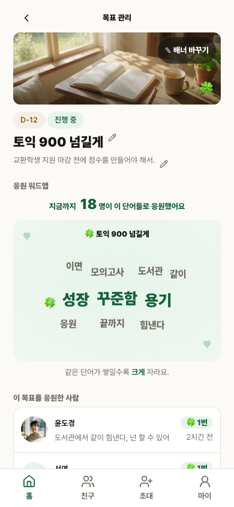
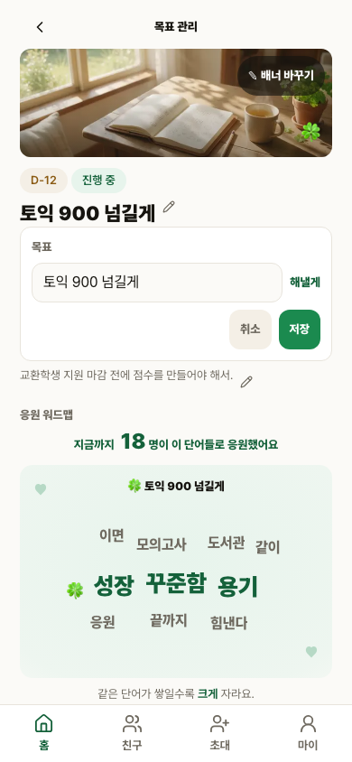
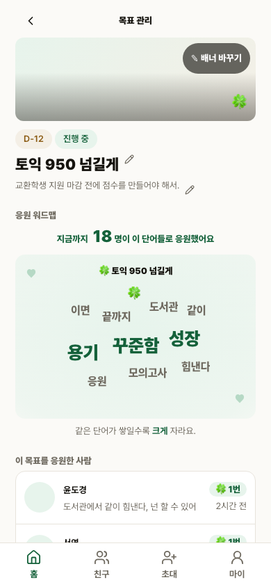
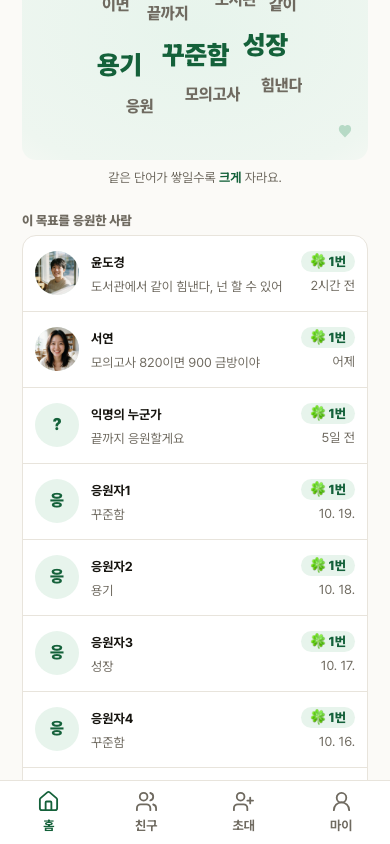
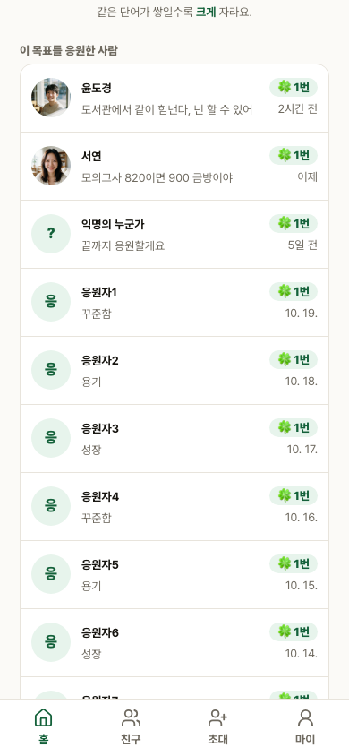
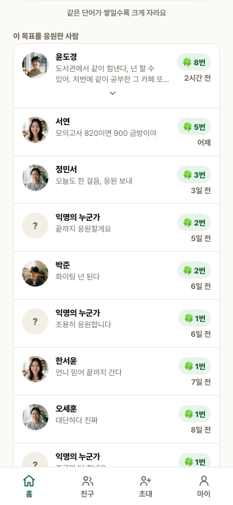

S1 목표 관리 · 편집 · 응원자 목록
독립 qa-verifier가 현재 staging에서 F1을 재실행하고 QAS1-01~04 해소를 확인했다.
staging alias · deployment dpl_2QeUAd65Qn4Tcfs9SvCuZaFWmbC3
1 / 1F1 독립 재실행, skip 0
2 / 2F2 독립 통과 증거 재사용
439 / 439전체 회귀 재실행
9 / 9인증된 S1 route 실측
QAS1-01~04 해소 근거
| 결함 | 보완 근거 | 현재 판정 |
|---|---|---|
| QAS1-01 | 인증된 /me/goal/{id}를 360·390·412·600·700·780·820·900·1000px에서 직접 측정. | 해소 |
| QAS1-02 | owner 편집부터 reload 영속, 8→18 전개까지 단계별 6장. 승인본과 실제 화면은 같은 390×844·scroll·요소 상태로 별도 대조. | 해소 |
| QAS1-03 | docs/build-log.md, docs/구현현황.md, manifest, demos에 실제 수정·배포 ID·증거 경계를 기록. | 해소 |
| QAS1-04 | 독립 재검수 전에는 PASS를 보류했고, qa-verifier 실측 PASS 뒤에만 closed로 갱신. | 해소 |
PW-02 한 실행의 연속 화면





builder 실행 route는 /me/goal/363, 독립 재검수 route는 /me/goal/372였다. 두 fixture 모두 실행 뒤 정리돼 URL은 재사용하지 않는다. 04는 제목 영속성 확인 직후라 cover·avatar가 loading 중이며, 05·06·08은 완전 렌더 상태다.
승인본과 실제 화면, 동일 상태 대조


| 정렬 기준 | 양쪽 모두 첫 supporter card top 72px |
|---|---|
| DOM 데이터 행 | prototype 11행, 실제 fixture 18행. viewport 안에 완전히 보이는 행 수를 뜻하지 않는다. |
| 픽셀 차이 | 72,865 / 329,160px, 22.14%. 평균 채널 차이 10.42, 최대 255 |
| 차이 경계 | viewport·scroll·semantic state는 동일하다. 이름·응원 횟수·행 수는 prototype과 fixture 데이터가 다르며 픽셀 동일성은 주장하지 않는다. |
인증된 S1 화면 9폭 실측
| 폭 | 13px 미만 | 본문 토큰 | 44px 미만 누름 | active | overflow | 하단 clearance |
|---|---|---|---|---|---|---|
| 360·390·412·600·700·780·820·900·1000 | 전부 0 | 전부 16px | 전부 0 | 전부 100%, 27/27 | 전부 0 | 전부 80px |
정본 판정 복원: median_font=13은 참고값이다. 합격 기준은 fontBelow13=0과 .font-designer-14r ≥ 16px이며 tap·active·overflow·fixed-bottom 축도 함께 검사했다.
실행 결과와 증거
| 게이트 | 결과 | 증거 |
|---|---|---|
| F1 PW-02 | 독립 재실행 1 passed, 0 skipped. 9폭과 reload 영속 포함. | 독립 로그 · builder 로그 |
| F2 AUTH-GOAL-01 · SMOKE-01 | 독립 QA 통과 2/2, 0 skipped 재사용. 인증 소스 영향 없음. | 로그 |
| QA 계약 + unit 전체 | 78 files, 439 tests passed. active CSS 변경으로 1회 재실행. | 로그 |
| Vercel preview build | Build Completed in /vercel/output, deployment READY. | deploy · alias · health 읽기 화면 |
| source identity | base commit, source/deployed SHA-256, rejected snapshot 경계 기록. | manifest 읽기 화면 |
| 독립 QA | v1 반려 원문과 v2 해소 재검수를 함께 보존한다. | v1 FAIL 원문 렌더 · v2 PASS 원문 렌더 |
오류 이력과 배포 경계
- F1 연속 실패 1회. 정본에 없는
median_font ≥ 16assertion을 새로 만든 테스트 계약 오류였다. - 그 기준으로 이름·메시지·날짜를 16px로 키운 CSS 3곳은 기존
text-label-small·text-meta-micro토큰으로 복구했다. - 잘못된 snapshot
/private/tmp/haenael-s1-remediation-20261027-mCP7b6은 alias에 연결하지 않았고 증거로 사용하지 않는다. - 검사를 축소하지 않았다. 정본 판정 축으로 복원했고 실제 85.7%였던 active coverage는 CSS를 보완해 100%로 올렸다.
- production 배포·과금·commit·상태 파일 수정은 없고 S2/S3는 건드리지 않았다.